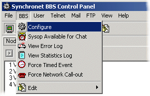

You can find the latest released public distribution of Synchronet at http://www.synchro.net.
Synchronet is currently available in three separate major versions:
Version 2.3 for DOS and OS/2 Supports serial/modem and local logins Native 16-bit and 32-bit console mode executables Single node per instance (up to 250 total) Version-specific features are noted with: (v2 Only)
Version 3 for Windows Supports TCP/IP logins only Native 32-bit DLLs and GUI front-end application Up to 250 nodes per instance Version-specific features are noted with: (v3+ Only)
Version 3 for Linux and Unix-like OSes See sbbsunix.txt for details
All configuration and data files are compatible between version 2.3 and 3.x so you can combine instances of different versions to create a single "hybrid" BBS.
Because of the many variances when changing to a different version or revision of Synchronet, this topic is not covered here. When upgrading an existing Synchronet installation to a newer version or revision, you should ALWAYS consult the upgrade documentation included with the distribution (usually in the form of an UPGRADE.TXT file). Upgrade-only distributions are usually made available in a more compact archive form (e.g. sbup300c.zip).
After downloading the Synchronet distribution file (e.g. sbbs300c.zip), you will need to extract the archive file that you downloaded into a temporary directory on your hard drive. You will need WinZip or an equivalent archive program to uncompress and extract the installation files.
Once you've extracted the installation files, go to the directory you extracted the compressed files to and run SETUP to start the installation.
The default installation directory is recommended for most users. If you choose to change the installation directory, it is critical that you DO NOT use a path with long filenames or spaces as Synchronet still relies on some 16-bit DOS utilities which require DOS-compatible 8.3 file and directory names to function. It is recommended you use a directory named SBBS off of the root directory on one of your hard drives (e.g. C:\SBBS).
You should now be at the Setup Type Installation menu. Choosing a Custom setup from this menu, will allow you to select the items that you want (or don't want) installed. If you are upgrading an existing installation of Synchronet (v2.3 or v3.0), it is advised that you choose Custom Setup and disable the following installation components:
Configuration Files
Text and Menu Files
External Programs
After completing your selection and the installation is completed you will find a new Icon on your Desktop and in your StartUp Folder in your Start Menu. If you do not want Synchronet to start automatically during boot, you may safely delete the Synchronet shortcut from your StartUp Folder.
Upon Executing Synchronet the screen will look something like the one below.
After starting Synchronet for the first time there will be several pop-up windows that are running programs and events required before the system can be used.
The last window that opens will start the Synchronet Configuration Program (SCFG). To run SCFG again later you can load it from the Synchronet Control Panel (SBBSCTRL) by selecting BBS and then Configure from the menu bar.

Before putting the system online you should configure your BBS with SCFG to set your system options and settings according to your preferences. It is recommended you spend some time reading and becoming familiar with your configuration and the many options available.
After completing configuration you should then follow the proper steps to add a sysop account. Once you create the account you should become familiar with the Synchronet User Editor and set the security settings for the account(s) you have created.
Once you have completed the initial setup of your system and sysop account, you have a basic functioning Synchronet BBS System. Please refer to the rest of the documentation to finish the setup of your new BBS System. Back to Top
There are a number of avenues that can be used to find help on Synchronet.
This list is but a small one of the available resources:
Synchronet Homepage : http://www.synchro.net
Support BBS (Vertrauen) : telnet://vert.synchro.net
Echomail support: FidoNet (zone 1) : SYNC_SYSOPS - Synchronet BBS Software Discussion
For detailed instructions on how and where to get Synchronet technical support, see support.html.
This manual is an ongoing work in progress. As Synchronet is constantly evolving, so is this manual. This manual aims to give you comprehensive information about installing, configuring, updating, and maintaining your Synchronet system. There are additional helpful documents that you may find in your Synchronet docs directory.
Copyright © 2006 by Rob Swindell
Synchronet BBS Software (Synchronet)
Version 3 is comprised of several documentation,
library, executable, and source code
files, all of which are covered by the
GNU General Public License with the exception of the following portions
covered by
the GNU Lesser General Public License:
SMBLIB and XSDK.
Synchronet Version 2 (for DOS and OS/2) and its source code was released to the
Public Domain by Digital Dynamics
in 1997 and remains Public Domain software today.
Synchronet Version 3 is not Public Domain software.
For the complete Copyright Information please read the Copyright Document .